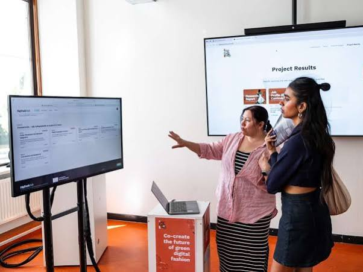
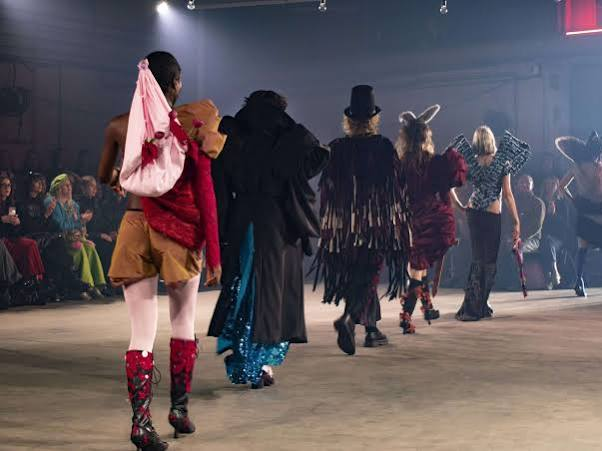
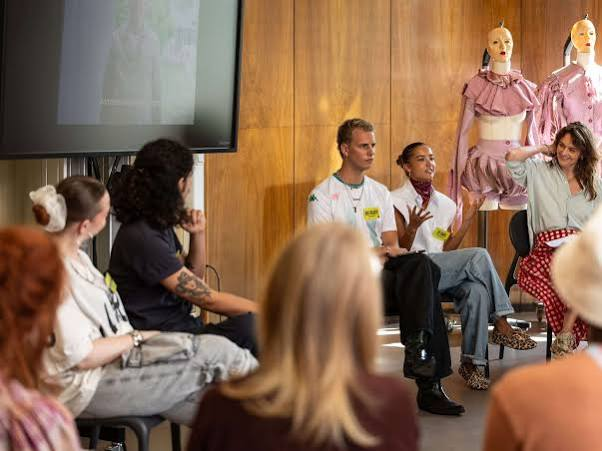
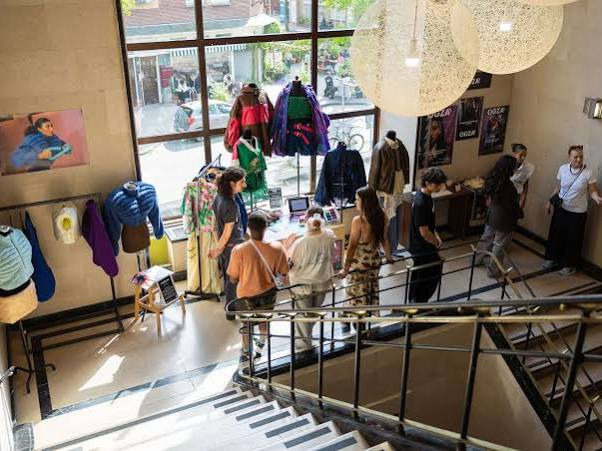
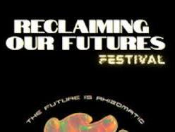
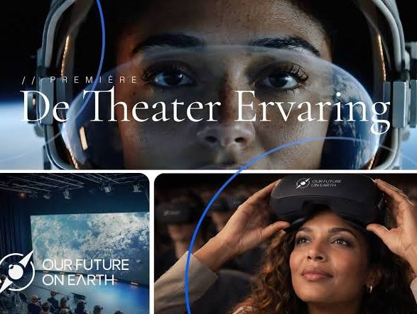

Conversation 929
Theater of the Futures
Prompt 1 · You
AMFI theater of the futures
Response 1 · Google AI Mode
While there isn't a single permanent physical venue called the "Theater of the Futures" at the institute, the Amsterdam Fashion Institute (AMFI) frequently transforms its campus and spaces into experiential "theaters" or exhibitions dedicated to speculative, digital, and sustainable fashion futures. Most notably, this concept comes alive through its high-tech showcase platforms and experimental industry collaborations.
AMFI (Amsterdam Fashion Institute) +1






Core Innovations & Platforms
- AMFI NEXT Annual Event: This serves as a key interactive platform where graduating students build immersive exhibitions to present their final visions for the future of fashion. These showcases anchor on critical contemporary themes, specifically Sustainability, Digitalisation, and Diversity & Inclusion. AMFI (Amsterdam Fashion Institute) +1
- Virtual Performance & "Venues of the Future": AMFI works at the intersection of fashion and performing arts. Through innovation tracks like the Master Digital Design and research groups, AMFI has explored projects like Venues of the Future, a collaboration exploring online, hybrid, and virtual environments as the future stage for live public interaction and digital micro-commissions. DEN | Kennisinstituut cultuur & digitale transformatie +1
- The CTRL+ALT+DEL Track: Exhibited during major events at the institute, this special segment highlights cutting-edge student projects working exclusively with AI, Blockchain, and 3D/Virtual Fashion rendering, effectively turning digital apparel design into a performative art. AMFI (Amsterdam Fashion Institute)
- Curriculum Tracks: Speculative modeling is woven directly into the school's structure through dedicated modules like Futures Scenarios (focused on trend forecasting and scenario presentations) and the Sustainable Futures exchange program. Amsterdam University of Applied Sciences +1
Are you looking to attend an upcoming student showcase at AMFI, or are you researching their academic modules and digital design technologies? Let me know so I can pull the exact schedule or program details for you!
Source links preserved from this response
- Amsterdam Fashion Institute (AMFI)
http://amfi.nl/ - amfi.nl
https://amfi.nl/a-fresh-perspective-on-the-future-of-fashion-at-amfi-next-2025/ - amfi.nl
https://amfi.nl/amfi-next-2026/ - www.den.nl
https://www.den.nl/venues-of-the-future - coursecatalogue.amsterdamuas.com
https://coursecatalogue.amsterdamuas.com/print-program/amfi-afi-ft/2023-2024/098773
Prompt 2 · You
environments as the future stage for live public interaction and digital micro-commissions. 24/7
Response 2 · Google AI Mode
"Venues of the Future" is an innovative creative research and development project designed specifically to establish digital, online, and hybrid environments that function 24/7 as a town square for the performing arts.
www.audiencelabs.org +1
Initiated under the Dutch Innovatielabs programme, this initiative explores what happens when a theater venue never truly closes its doors, using the digital space to continuously stretch the traditional boundaries between creators and their audiences.
DEN | Kennisinstituut cultuur & digitale transformatie +1
The 24/7 Digital Stage Framework
The project moves away from static, single-use live programming to focus on permanent virtual presence, governed by three main operational tracks:
Gensler
- Continuous Public Interaction: Instead of restricting the audience experience to a 2-hour evening timeframe, the environment uses interactive visualization, virtual reality (VR), and extended reality (XR) to allow the public to interact with, influence, and gain agency over the art at any hour of the day.
 ResearchGate +1
ResearchGate +1 - Agile Digital Micro-Commissions: The initiative bypasses lengthy production timelines by funding artists through rapid, agile "sprints" to create bite-sized digital art and micro-commissions. These pieces live inside the hybrid environment permanently, making art accessible to a global audience regardless of their timezone. DEN | Kennisinstituut cultuur & digitale transformatie
- The FAITH Artistic Baseline: The project's hybrid experiments are anchored conceptually around FAITH, a collaborative physical and digital theater and dance production by NITE (National Intermezzo Theater Ensemble) and Moroccan choreographer Khalid Benghrib / 2K-Far. The performance serves as the live test bed to study how connection and identity healing can happen seamlessly across physical and continuous digital spaces. DEN | Kennisinstituut cultuur & digitale transformatie +1
Core Collaborators
The cross-border ecosystem driving this R&D environment includes:
- DEN Knowledge Institute (Netherlands): Orchestrates digital transformation and sustainable practice models for the cultural sector.
- Audience Labs (UK): Pioneering immersive theater boundaries and audience-maker dialogue.
- Substrakt (UK): Providing the technical digital architecture needed to maintain complex online interactive venues. DEN | Kennisinstituut cultuur & digitale transformatie +1
Would you like to delve into the technical infrastructure (like the interactive XR platforms) used to run these 24/7 spaces, or are you interested in how artists can apply for these digital micro-commissions?
Source links preserved from this response
- Audience Labs
https://www.audiencelabs.org/current-projects/venues-of-the-future-faith - www.den.nl
https://www.den.nl/venues-of-the-future - www.gensler.com
https://www.gensler.com/blog/future-of-live-music-venues - www.researchgate.net
https://www.researchgate.net/publication/394310731_Urban_digital_twins_for_citizen-centric_planning_A_systematic_review_of_built_environment_perception_and_public_participation